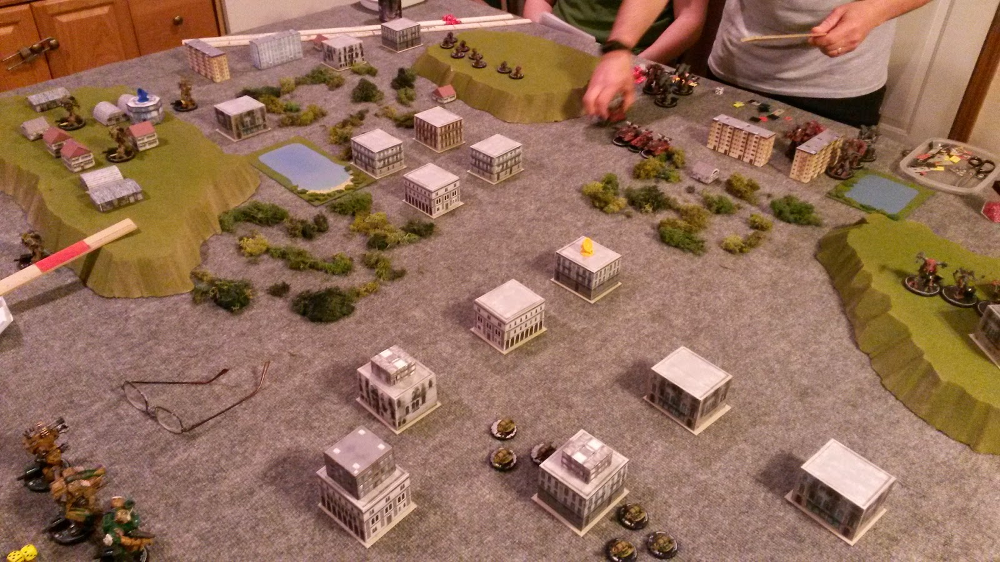

References and printable cards for the table.
PACKDead Air playtest packKestrel Watch versus Blackwire Recovery. Everything to prepare the starter matchup.MAPStarter map & diagramsMeasured 48 × 48 setup, movement, objective control, and pushing.LISTPrint cards or dials for your armyChoose photo cards or compact dial sheets, with full tracks and assignments for every model.01Turn referenceRound sequence, actions, attacks, and heat.NEWReadiness referenceReady, Committed, Spent: recovery, pushing, and a roster tracker.PDFPrint the readiness sheetUS Letter · One-page reference and reusable tracker02Weapon referenceBallistic, Energy, and Rocket strengths and costs.03Equipment referenceThe new meanings of your printed combat colors.04Pilot cardsGunner, Skirmisher, Brawler, and Engineer.PDFPrint the pilot cardsUS Letter · Four 2.5 × 3.5 inch cards · Print at 100%PDFPrint the unit cardsComplete combat and heat dials · Two photo cards per Letter page · Print at 100%CSVSample force dataUnit counts and costs for all three forces.CSVPoints change logRecord formula changes and test results.LOGPlaytest logA printable record for your games and rules questions.